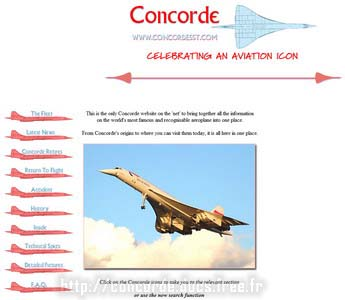
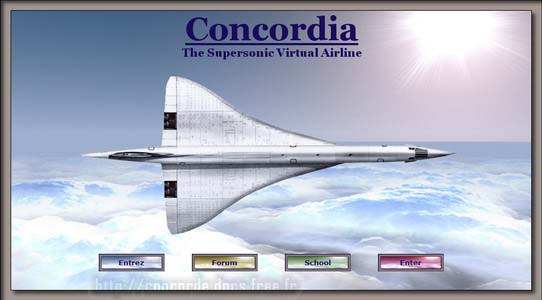

Mes liens
http://concordesst.com

ConcordeSST : Gros site et gros forum anglais ; la référence.
http://www.af001.com

AF001 : Gros forum Français sur le Concorde.
http://assovirtuailes.free.fr
Virtuailes : association Toulousaine qui remet en état le simulateur de vol Concorde Air France
(mon coup de coeur).
http://www.salon-de-l-aviation.com
Salon de l'aviation : Historique Concorde, check-list urgences, vol virtuel à ne pas manquer.
http://caea.free.fr
Conservatoire de l'air et de l'espace d'aquitaine, un beau musée.
http://mach2.concorde.free.fr
Vivez un aller / retour Paris-New York.
http://www.sstsim.com
Pilotez Concorde avec le meilleur module additionnel pour Microsoft Flight Simulator.
http://museedelta.free.fr
Musée Delta : tout est dans le nom.
http://www.club-concorde.org

Le club Concorde.
http://www.art-avia.eu
Le site de Bernard Charles, incluant une galerie de photos Concorde.
(une de ses photos est utilisée sur la page qui présente le proto 001)
http://le.pointu.free.fr

Une énorme et fort intéressante revue de presse sur Concorde.
http://www.fs-tutoriels.com
Pour les fanas de simulation, les remarquables tutoriaux en Français de Pierre Chassang.
http://www.concordia-va.com

Toujours pour les fanas de simulation, une compagnie virtuelle équipée d'une flotte de Concorde.
http://www.capavenirconcorde.com

Le site de l'association Toulousaine Cap Avenir Concorde.
http://www.mae.org

Le musée de l'air et de l'espace (MAE), qui possède 2 Concordes.
http://www.airliners.net

Plus d'un million et demi de photos d'avions sur le site Airliners.
Une photo de Javier Guerrero et une de Spencer Wilmot sont utilisées sur ce site.
http://www.super-mystere.net
Une très belle collection de photographies aéronautiques.
(une des photos est utilisée sur la page qui présente le manuel de vol du 201)
http://francis.deshayes.free.fr/concorde/index.htm
Sont reprises sur ce site des pages d'un Science et Vie, numéro spécial paru au Salon du Bourget en 1969.
Petit site, mais contenant des informations fort intéressantes.
http://pagesperso-orange.fr/cockpit.francois/Concorde/index.html
Le site de François, qui nous présente les détails de la construction de son simulateur Concorde.
Avec une minutie extrème, limite vétilleux, ce grand passionné nous présente la maquette fonctionnelle de son cockpit.
En bonus, des informations fort intéressantes sur Concorde. Site incontournable pour les pilotes virtuels.
http://www.concordescopia.fr
Concordescopia : Last but not least, le site d'une relation Toulousaine,
collectionneur fou de tout ce qui touche au Concorde (ne pas manquer les menus) :